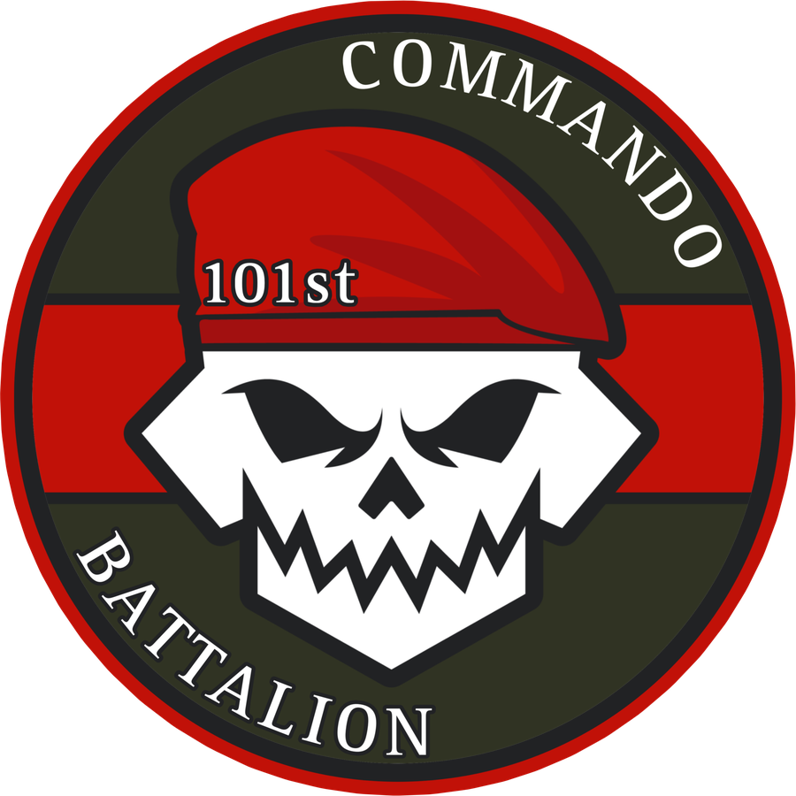
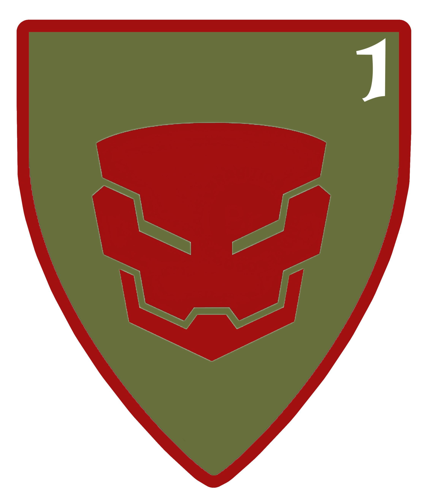
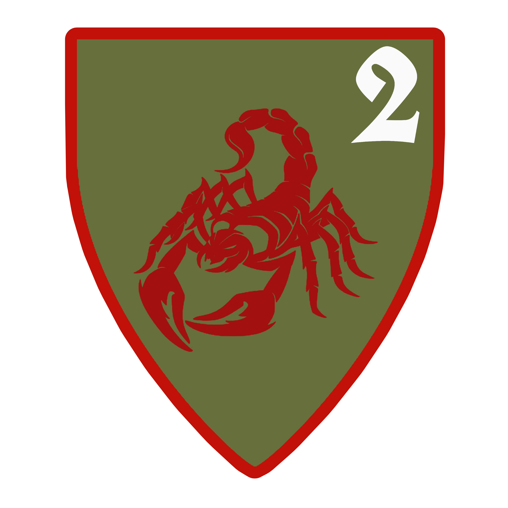
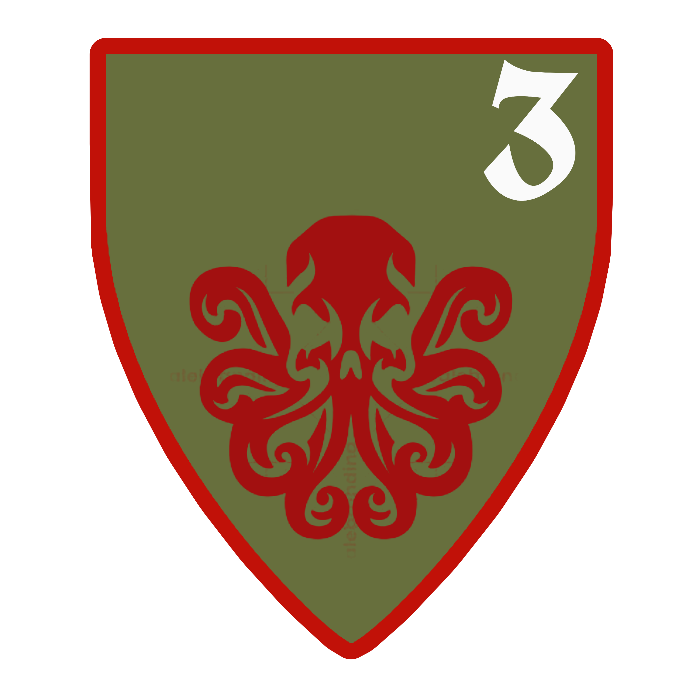
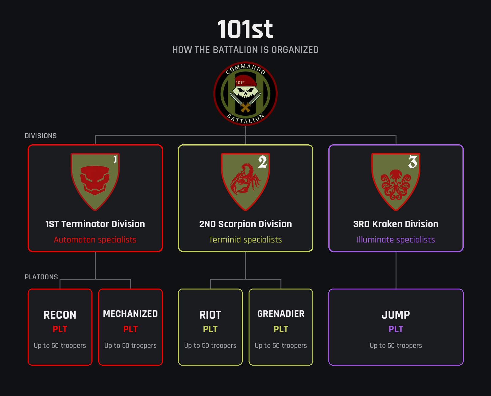

Helldivers 2 · player community
101st Commando Battalion
The 101st Commandos. Recon is in our blood.
A community for players who want organised squads, plain callouts, and people who stick the landing together.
Not an official Arrowhead Game Studios site.

01 — Field brief
What the unit is
The 101st Commando Battalion is a Helldivers 2 community of three divisions fighting as one for Super Earth. Squads of four, every rank welcome, no diver left behind. Wear the beret, earn the knives.
It is run by Commander Maximus. This website is a front door for that community. It is not an official Arrowhead Game Studios site, and it is not endorsed by the developers.
Members come here to find reliable teammates: people who mark a patrol before they throw a stratagem, who talk in plain language, and who would rather extract together than chase a highlight. Bring a microphone if you have one, and a bit of patience for the rest of the squad.
Nothing on this page is an in-game rank, a studio announcement, or a record of service. It is a fan community with a military-sci-fi name, full stop.
-
Recon first
Read the ground before you rush the objective. A short look saves a long reinforce.
-
Squad over glory
Call the play, cover the flank, and leave with the people you dropped with.
-
Straight talk
Clear callouts beat noise. Friendly tone, no drama, no pretending this is official.
Structure
Divisions
The 101st Commando Battalion is a battalion split into three specialist divisions, each training for a single enemy front. Its platoons are capped at 50 troopers and run by Captains.

1st Terminator Division — Automaton specialists. Home of
RECON PLT MECHANIZED PLT
2nd Scorpion Division — Terminid specialists. Home of
RIOT PLT GRENADIER PLT
3rd Kraken Division — Illuminate specialists. Home of
JUMP PLT
Pick the front you want to fight on.

02 — Enlistment
How to join
Joining happens in Discord. Use the button on this page. It goes to the 101st server and nowhere else.
-
1
Open the invite
Use the Join the Discord button. It goes to discord.gg/hpKS4ktKYc. Do not follow a lookalike link that claims to be the 101st.
-
2
Read the rules and say hello
Read #rules, then introduce yourself in #welcome. A mic is not required.
-
3
Pick a class and a division
In #class-and-company-selection, pick a class and a division. The 1st Terminator Division is home to RECON PLT and MECHANIZED PLT, the 2nd Scorpion Division to RIOT PLT and GRENADIER PLT, and the 3rd Kraken Division to JUMP PLT. Classes are Assault, Medic, Support, Marksman, Tanker, Demolitions, Flame Trooper, Gas Trooper, Stealth, and Engineer.
-
4
Join the clan and find a squad
Run /clanjoin. Squads are in #looking-for-group. Ping @LFG.
Lore
The Merak Legacy
The doctrine of the 101st was forged through experience. The 101st Commandos were founded by veterans of the First Legion during the March to Cyberstan. Their defining battle occurred on their homeworld of Merak, where the veterans encountered the Jet Brigade and Incineration Corps in some of the most brutal fighting they had ever experienced. With Gunship Fabricators unable to be destroyed, enemy air power remained a constant threat while the Incineration Corps turned the battlefield into an unrelenting assault of fire and destruction. Casualties reached levels never before experienced by the veterans of the First Legion. Those who survived Merak became the foundation of the 101st.
From Merak came the central lesson of the Commandos: "A force that cannot adapt will eventually be overwhelmed."
The 101st therefore rejects dependence upon a single tactic, role, or formation. They adapt. They integrate. They overcome. And they depend on nothing. Give no quarter.
03 — Current order
Operation: No Quarter
101st EOW operation (Execution Of War). In progress. All divisions. Target: 50,000 kills combined across all fronts. Commander Maximus has ordered the 3rd Kraken Division, the 2nd Scorpion Division, the 1st Terminator Division, and the 4th Cavalry Division to take the fight to every front and bring back scalps. The objective is 50,000 kills, combined across the Illuminate, Terminid, and Automaton fronts. Deadline: Saturday. Prize: a US$25 gift card of their choice. The winning division picks its most deserving trooper to receive it. Give no quarter. -101st Hicom
04 — Where the work happens
Recruiting lives in Discord
Recruiting, announcements, and squad ideas live in Discord. This page will not try to stand in for that. It is only the sign at the gate: who the 101st is, who runs it, and where to join.